2022 Advanced Higher Mathematics - Paper 2 marking instructions
Source: Scottish Qualifications Authority (SQA) / Qualifications Scotland. This is a StemInteract HTML companion, not an official HTML edition. Selectable text is supplied alongside original page images. Use the images or original PDF for equations, powers, fractions, vector notation, tables and diagrams; text extraction cannot fully preserve mathematical layout.
Jump to a question
PDF page 1
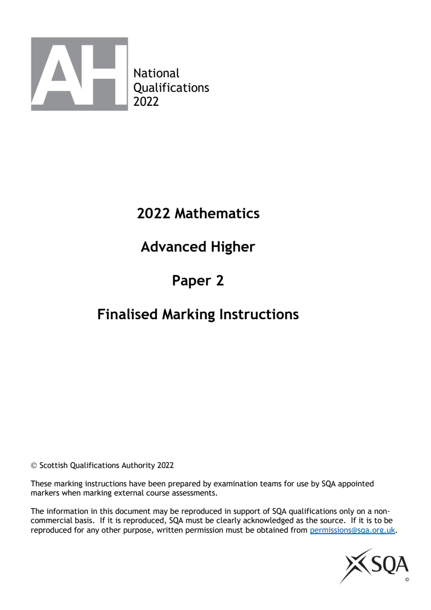
Selectable page text
National
Qualifications
2022
2022 Mathematics
Advanced Higher
Paper 2
Finalised Marking Instructions
© Scottish Qualifications Authority 2022
These marking instructions have been prepared by examination teams for use by SQA appointed
markers when marking external course assessments.
The information in this document may be reproduced in support of SQA qualifications only on a non-
commercial basis. If it is reproduced, SQA must be clearly acknowledged as the source. If it is to be
reproduced for any other purpose, written permission must be obtained from permissions@sqa.org.uk.PDF page 2
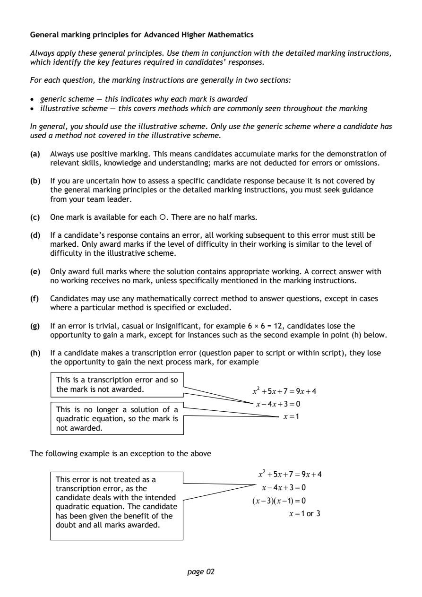
Selectable page text
General marking principles for Advanced Higher Mathematics
Always apply these general principles. Use them in conjunction with the detailed marking instructions,
which identify the key features required in candidates’ responses.
For each question, the marking instructions are generally in two sections:
• generic scheme — this indicates why each mark is awarded
• illustrative scheme — this covers methods which are commonly seen throughout the marking
In general, you should use the illustrative scheme. Only use the generic scheme where a candidate has
used a method not covered in the illustrative scheme.
(a) Always use positive marking. This means candidates accumulate marks for the demonstration of
relevant skills, knowledge and understanding; marks are not deducted for errors or omissions.
(b) If you are uncertain how to assess a specific candidate response because it is not covered by
the general marking principles or the detailed marking instructions, you must seek guidance
from your team leader.
(c) One mark is available for each . There are no half marks.
(d) If a candidate’s response contains an error, all working subsequent to this error must still be
marked. Only award marks if the level of difficulty in their working is similar to the level of
difficulty in the illustrative scheme.
(e) Only award full marks where the solution contains appropriate working. A correct answer with
no working receives no mark, unless specifically mentioned in the marking instructions.
(f) Candidates may use any mathematically correct method to answer questions, except in cases
where a particular method is specified or excluded.
(g) If an error is trivial, casual or insignificant, for example 6 × 6 = 12, candidates lose the
opportunity to gain a mark, except for instances such as the second example in point (h) below.
(h) If a candidate makes a transcription error (question paper to script or within script), they lose
the opportunity to gain the next process mark, for example
This is a transcription error and so
the mark is not awarded. x² +5x+7 =9x+4
x−4x+3=0
This is no longer a solution of a
x=1
quadratic equation, so the mark is
not awarded.
The following example is an exception to the above
x² +5x+7=9x+4
This error is not treated as a
transcription error, as the x−4x+3=0
candidate deals with the intended
(x−3)(x−1)=0
quadratic equation. The candidate
x=1 or 3
has been given the benefit of the
doubt and all marks awarded.
page 02PDF page 3
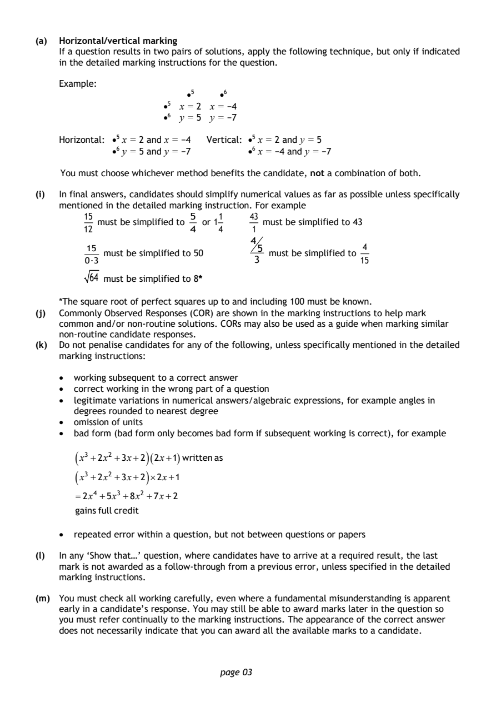
Selectable page text
(a) Horizontal/vertical marking
If a question results in two pairs of solutions, apply the following technique, but only if indicated
in the detailed marking instructions for the question.
Example:
•5 •6
•5 x = 2 x = −4
•6 y = 5 y = −7
Horizontal: •5 x = 2 and x = −4 Vertical: •⁵ x = 2 and y = 5
•6 y = 5 and y = −7 •6 x = −4 and y = −7
You must choose whichever method benefits the candidate, not a combination of both.
(i) In final answers, candidates should simplify numerical values as far as possible unless specifically
mentioned in the detailed marking instruction. For example
15 5 1 43
must be simplified to or 1 must be simplified to 43
12 4 4 1
4
15 5 4
must be simplified to 50 must be simplified to
0·3 3 15
64 must be simplified to 8*
*The square root of perfect squares up to and including 100 must be known.
(j) Commonly Observed Responses (COR) are shown in the marking instructions to help mark
common and/or non-routine solutions. CORs may also be used as a guide when marking similar
non-routine candidate responses.
(k) Do not penalise candidates for any of the following, unless specifically mentioned in the detailed
marking instructions:
• working subsequent to a correct answer
• correct working in the wrong part of a question
• legitimate variations in numerical answers/algebraic expressions, for example angles in
degrees rounded to nearest degree
• omission of units
• bad form (bad form only becomes bad form if subsequent working is correct), for example
(
x³ +2x² +3x+2
)(2x+1)
written as
( )
x³ +2x² +3x+2 ×2x+1
=2x⁴ +5x³ +8x² +7x+2
gains full credit
• repeated error within a question, but not between questions or papers
(l) In any ‘Show that…’ question, where candidates have to arrive at a required result, the last
mark is not awarded as a follow-through from a previous error, unless specified in the detailed
marking instructions.
(m) You must check all working carefully, even where a fundamental misunderstanding is apparent
early in a candidate’s response. You may still be able to award marks later in the question so
you must refer continually to the marking instructions. The appearance of the correct answer
does not necessarily indicate that you can award all the available marks to a candidate.
page 03PDF page 4
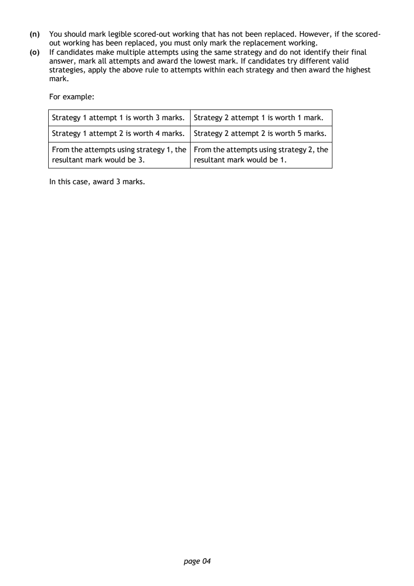
Selectable page text
(n) You should mark legible scored-out working that has not been replaced. However, if the scored-
out working has been replaced, you must only mark the replacement working.
(o) If candidates make multiple attempts using the same strategy and do not identify their final
answer, mark all attempts and award the lowest mark. If candidates try different valid
strategies, apply the above rule to attempts within each strategy and then award the highest
mark.
For example:
Strategy 1 attempt 1 is worth 3 marks. Strategy 2 attempt 1 is worth 1 mark.
Strategy 1 attempt 2 is worth 4 marks. Strategy 2 attempt 2 is worth 5 marks.
From the attempts using strategy 1, the From the attempts using strategy 2, the
resultant mark would be 3. resultant mark would be 1.
In this case, award 3 marks.
page 04PDF page 5
Paper 2, Question 1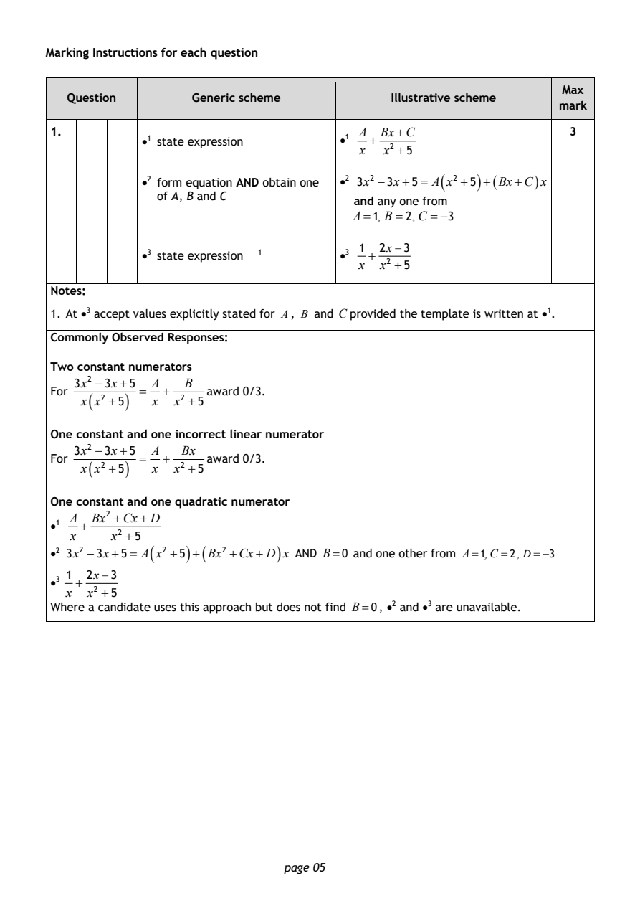
Selectable page text
Marking Instructions for each question
Max
Question Generic scheme Illustrative scheme
mark
1. A Bx+C 3
•1 state expression •1 +
x x² +5
•2 form equation AND obtain one •2 3x² −3x+5= A ( x² +5 ) +(Bx+C)x
of A, B and C
and any one from
A=1, B=2, C =−3
1 2x−3
•3 state expression ¹ •3 +
x x² +5
Notes:
1. At •³ accept values explicitly stated for A, B and Cprovided the template is written at •¹.
Commonly Observed Responses:
Two constant numerators
3x² −3x+5 A B
For = + award 0/3.
( )
x x² +5 x x² +5
One constant and one incorrect linear numerator
3x² −3x+5 A Bx
For = + award 0/3.
( )
x x² +5 x x² +5
One constant and one quadratic numerator
A Bx² +Cx+D
•1 +
x x² +5
•2 3x² −3x+5= A ( x² +5 ) + ( Bx² +Cx+D ) x AND B=0 and one other from A=1,C=2, D=−3
1 2x−3
•3 +
x x² +5
Where a candidate uses this approach but does not find B=0, •² and •³ are unavailable.
page 05PDF page 6
Paper 2, Question 2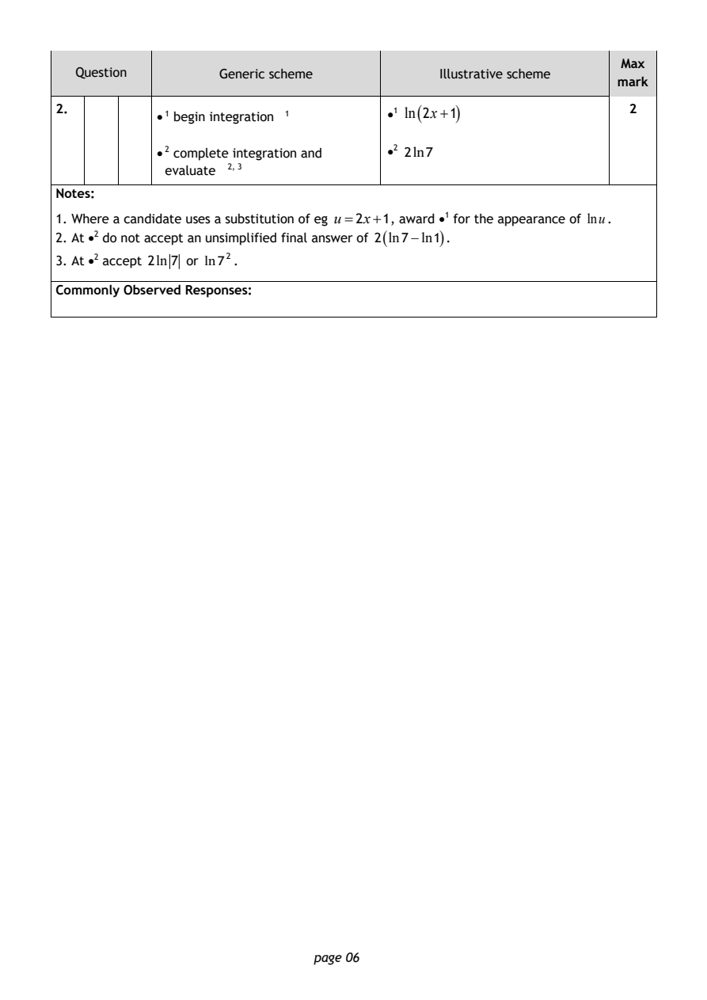
Selectable page text
Max
Question Generic scheme Illustrative scheme
mark
2. • 1 begin integration ¹ •1 ln(2x+1) 2
• 2 complete integration and •2 2ln7
evaluate ²^{,} 3
Notes:
1. Where a candidate uses a substitution of eg u=2x+1, award •¹ for the appearance of lnu.
2. At •² do not accept an unsimplified final answer of 2(ln7−ln1).
3. At •² accept 2ln 7 or ln7².
Commonly Observed Responses:
page 06PDF page 7
Paper 2, Question 3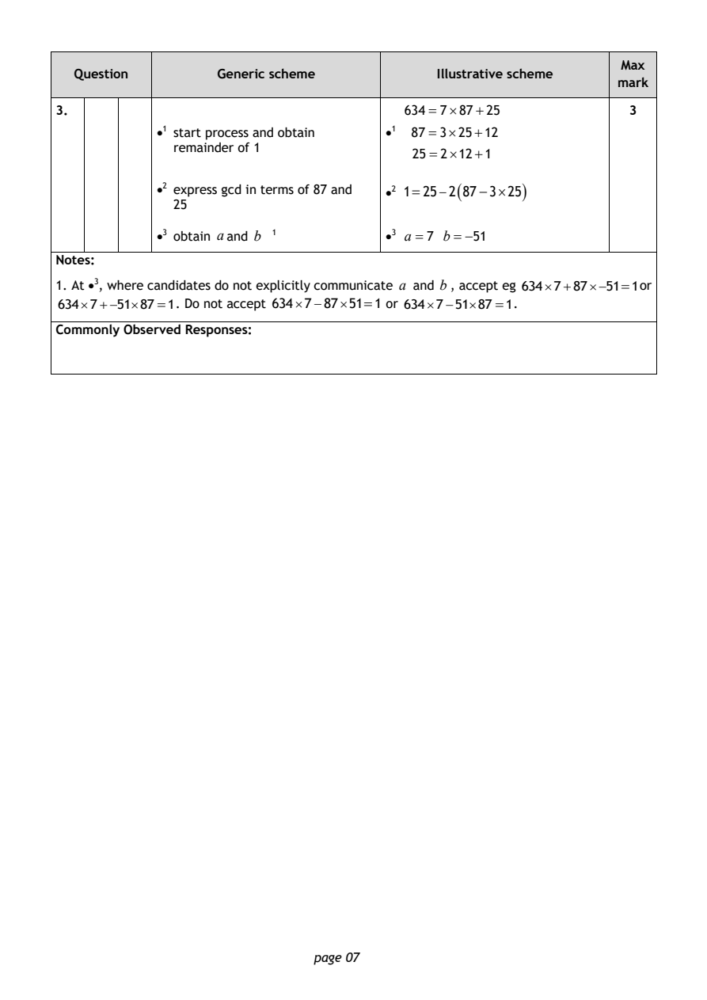
Selectable page text
Max
Question Generic scheme Illustrative scheme
mark
3. 634=7×87+25 3
•1 start process and obtain •1 87 =3×25+12
remainder of 1
25=2×12+1
•2 express gcd in terms of 87 and •2 1=25−2(87−3×25)
25
•3 obtain aand b ¹ •3 a =7 b=−51
Notes:
1. At •³, where candidates do not explicitly communicate a and b, accept eg 634×7+87×−51=1or
634×7+−51×87=1. Do not accept 634×7−87×51=1 or 634×7−51×87=1.
Commonly Observed Responses:
page 07PDF page 8
Paper 2, Question 4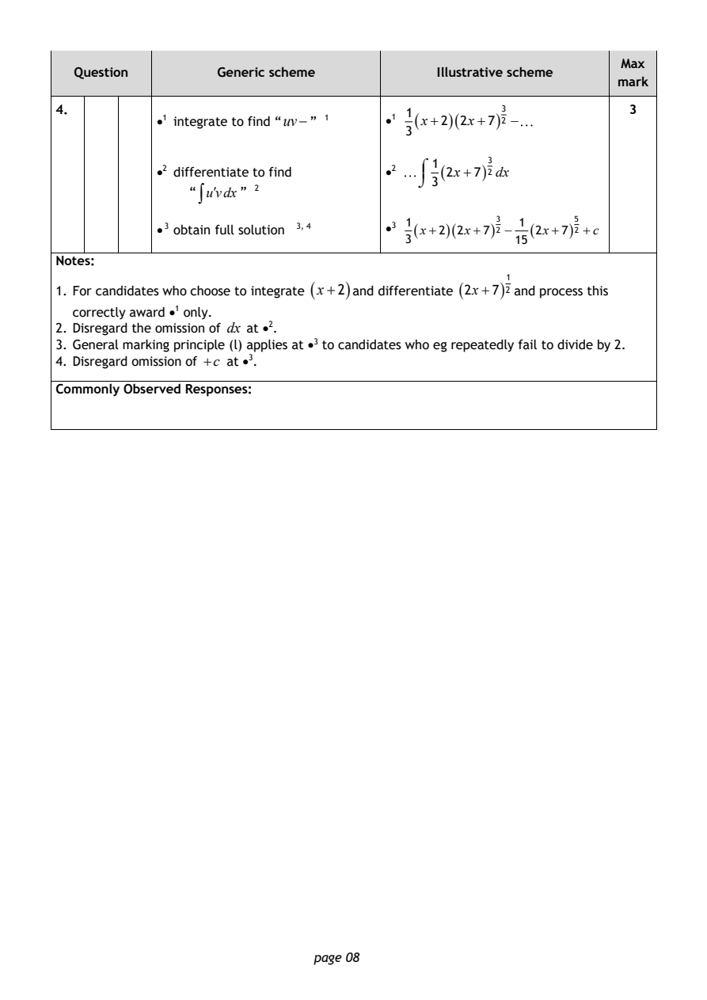
Selectable page text
Max
Question Generic scheme Illustrative scheme
mark
4. 1 3
•1 integrate to find “uv−” 1 •1 (x+2)(2x+7)³² −
3
•2 differentiate to find •2 ⌠ 1 (2x+7)³²dx
⌡3
“∫u′vdx” ²
1 1
• 3 obtain full solution ³^{,} 4 •3 (x+2)(2x+7)³² − (2x+7)⁵² +c
3 15
Notes:
1. For candidates who choose to integrate
(x+2)
and differentiate
(2x+7)²¹and
process this
correctly award •¹ only.
2. Disregard the omission of dx at •².
3. General marking principle (l) applies at •³ to candidates who eg repeatedly fail to divide by 2.
4. Disregard omission of +c at •³.
Commonly Observed Responses:
page 08PDF page 9
Paper 2, Question 5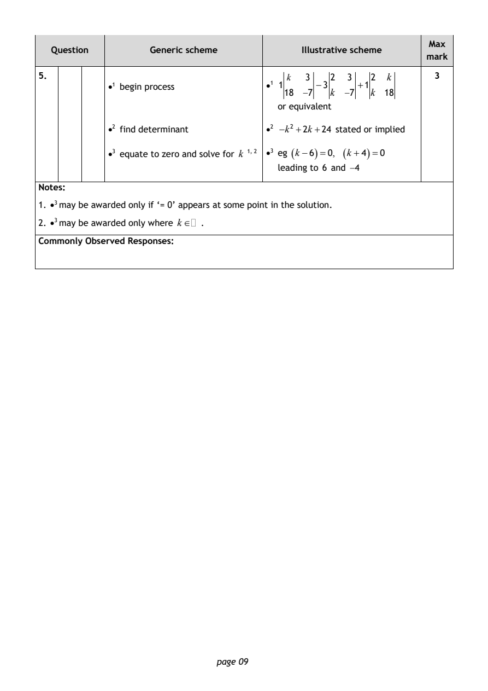
Selectable page text
Max
Question Generic scheme Illustrative scheme
mark
5. k 3 2 3 2 k 3
•1 begin process •1 1 −3 +1
18 −7 k −7 k 18
or equivalent
•2 find determinant •2 −k² +2k +24 stated or implied
•3 equate to zero and solve for k ¹^{,} ² •3 eg (k −6)=0, (k+4)=0
leading to 6 and −4
Notes:
1. •³ may be awarded only if ‘= 0’ appears at some point in the solution.
2. •³ may be awarded only where k∈ .
Commonly Observed Responses:
page 09PDF page 10
Paper 2, Question 6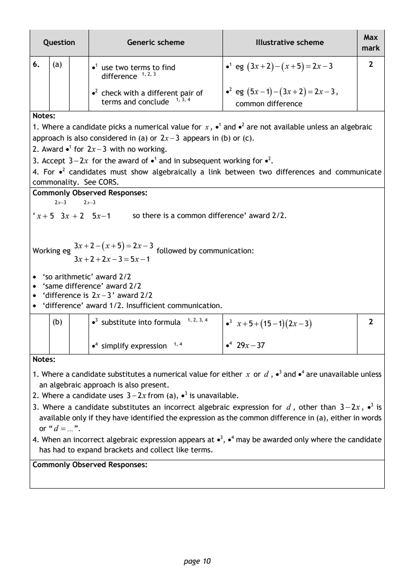
Selectable page text
Max
Question Generic scheme Illustrative scheme
mark
6. (a) •1 use two terms₂_{,} t₃o find •1 eg (3x+2)−(x+5)=2x−3 2
difference ¹^{,}
•2 check with a different _{,}p₃_{,}a₄ir of •2 eg (5x−1)−(3x+2)=2x−3,
terms and conclude ¹ common difference
Notes:
1. Where a candidate picks a numerical value for x, •¹ and •² are not available unless an algebraic
approach is also considered in (a) or 2x−3 appears in (b) or (c).
2. Award •¹ for 2x−3 with no working.
3. Accept 3−2x for the award of •¹ and in subsequent working for •².
4. For •² candidates must show algebraically a link between two differences and communicate
commonality. See CORS.
Commonly Observed Responses:
2x−3 2x−3
‘x+ 5 3x + 2 5x−1 so there is a common difference’ award 2/2.
3x+2−(x+5)=2x−3
Working eg followed by communication:
3x+2+2x−3=5x−1
• ‘so arithmetic’ award 2/2
• ‘same difference’ award 2/2
• ‘difference is 2x−3’ award 2/2
• ‘difference’ award 1/2. Insufficient communication.
(b) •3 substitute into formula ¹^{,} 2, 3, 4 •3 x+5+(15−1)(2x−3) 2
•4 simplify expression ¹^{,} 4 •4 29x−37
Notes:
1. Where a candidate substitutes a numerical value for either x or d , •³ and •⁴ are unavailable unless
an algebraic approach is also present.
2. Where a candidate uses 3−2xfrom (a), •³ is unavailable.
3. Where a candidate substitutes an incorrect algebraic expression for d , other than 3−2x, •³ is
available only if they have identified the expression as the common difference in (a), either in words
or “d =...”.
4. When an incorrect algebraic expression appears at •³, •4 may be awarded only where the candidate
has had to expand brackets and collect like terms.
Commonly Observed Responses:
page 10PDF page 11
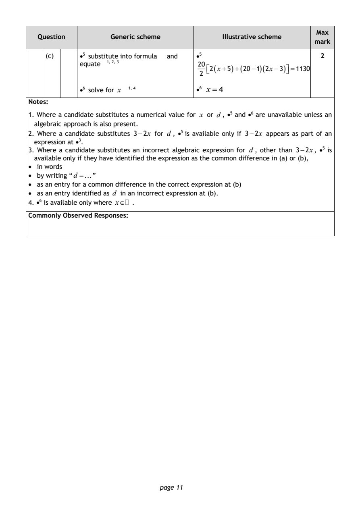
Selectable page text
Max
Question Generic scheme Illustrative scheme
mark
(c) •5 substitu_{,}₂t_{,}e₃ into formula and •5 2
equate ¹ 20
2(x+5)+(20−1)(2x−3)=1130
2
•6 solve for x ¹^{,} 4 •6 x=4
Notes:
1. Where a candidate substitutes a numerical value for x or d , •⁵ and •⁶ are unavailable unless an
algebraic approach is also present.
2. Where a candidate substitutes 3−2x for d , •⁵ is available only if 3−2x appears as part of an
expression at •³.
3. Where a candidate substitutes an incorrect algebraic expression for d , other than 3−2x, •⁵ is
available only if they have identified the expression as the common difference in (a) or (b),
• in words
• by writing “d = ”
• as an entry for a common difference in the correct expression at (b)
• as an entry identified as d in an incorrect expression at (b).
4. •⁶ is available only where x∈ .
Commonly Observed Responses:
page 11PDF page 12
Paper 2, Question 7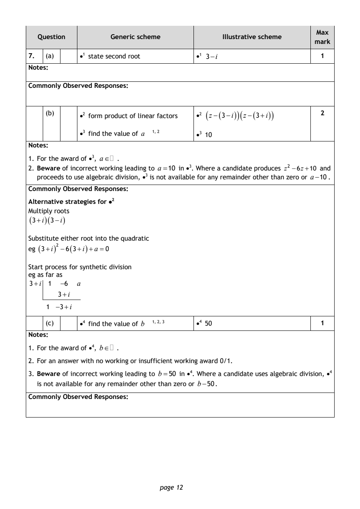
Selectable page text
Max
Question Generic scheme Illustrative scheme
mark
7. (a) •1 state second root •1 3−i 1
Notes:
Commonly Observed Responses:
(b)
•2 form product of linear factors •2
( z−(3−i))( z−(3+i)) 2
•3 find the value of a ¹^{,} 2 •3 10
Notes:
1. For the award of •³, a∈ .
2. Beware of incorrect working leading to a=10 in •³. Where a candidate produces z² −6z+10 and
proceeds to use algebraic division, •³ is not available for any remainder other than zero or a−10.
Commonly Observed Responses:
Alternative strategies for •²
Multiply roots
(3+i)(3−i)
Substitute either root into the quadratic
eg (3+i)² −6(3+i)+a =0
Start process for synthetic division
eg as far as
3+i 1 −6 a
3+i
1 −3+i
(c) •4 find the value of b ¹^{,} 2, 3 •4 50 1
Notes:
1. For the award of •⁴, b∈ .
2. For an answer with no working or insufficient working award 0/1.
3. Beware of incorrect working leading to b=50 in •⁴. Where a candidate uses algebraic division, •⁴
is not available for any remainder other than zero or b−50.
Commonly Observed Responses:
page 12PDF page 13
Paper 2, Question 8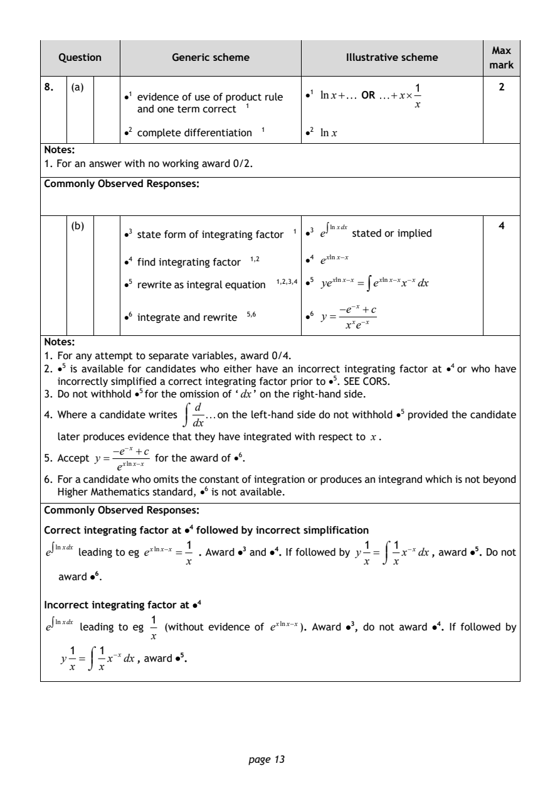
Selectable page text
Max
Question Generic scheme Illustrative scheme
mark
8. (a) 1 2
•1 evidence of use of product rule •1 lnx+ OR +x×
x
and one term correct ¹
•2 complete differentiation ¹ •2 ln x
Notes:
1. For an answer with no working award 0/2.
Commonly Observed Responses:
(b) ∫ x 4
•3 state form of integrating factor ¹ •3 e ^{l}ⁿ^{x}^{d} stated or implied
•4 find integrating factor ¹^{,}² •4 e^{x}^{l}ⁿ ^{x}⁻x
•5 rewrite as integral equation ¹^{,}²,3,4 •5 ye^{x}^{l}ⁿ ^{x}⁻x = ∫e^{x}^{l}ⁿ ^{x}⁻xx⁻^{x}dx
−e⁻^{x} +c
•6 integrate and rewrite ⁵^{,}⁶ •6 y =
x^{x}e⁻^{x}
Notes:
1. For any attempt to separate variables, award 0/4.
2. •⁵ is available for candidates who either have an incorrect integrating factor at •⁴ or who have
incorrectly simplified a correct integrating factor prior to •⁵. SEE CORS.
3. Do not withhold •⁵ for the omission of ‘dx’ on the right-hand side.
⌠ d
4. Where a candidate writes on the left-hand side do not withhold •⁵ provided the candidate
⌡ dx
later produces evidence that they have integrated with respect to x.
−e⁻^{x} +c
5. Accept y = for the award of •⁶.
e^{x}^{l}ⁿ^{x}⁻x
6. For a candidate who omits the constant of integration or produces an integrand which is not beyond
Higher Mathematics standard, •⁶ is not available.
Commonly Observed Responses:
Correct integrating factor at •⁴ followed by incorrect simplification
e ∫ ^{l}ⁿ ^{x}^{d} x leading to eg e^{x}^{l}ⁿ^{x}⁻x = 1 . Award •³ and •⁴. If followed by y 1 = ⌠ 1 x⁻^{x}dx, award •⁵. Do not
x x ⌡ x
award •⁶.
Incorrect integrating factor at •⁴
1
e ∫ ^{l}ⁿ ^{x}^{d} x leading to eg (without evidence of e^{x}^{l}ⁿ^{x}⁻x). Award •³, do not award •⁴. If followed by
x
1 ⌠ 1
y = x⁻^{x}dx, award •⁵.
x ⌡ x
page 13PDF page 14
Paper 2, Question 9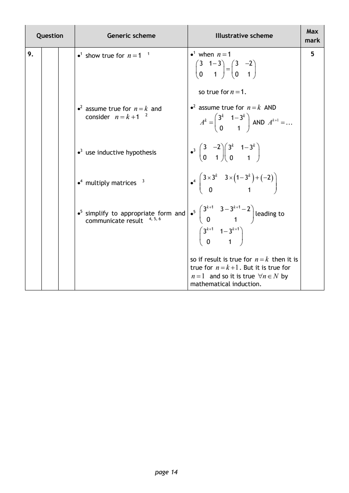
Selectable page text
Max
Question Generic scheme Illustrative scheme
mark
9. •1 show true for n=1 ¹ •1 when n=1 5
3 1−3 3 −2
=
0 1 0 1
so true forn=1.
•2 assume true for n=k and •2 assume true for n=k AND
consider n=k+1 ² 3^{k} 1−3^{k}
A^{k} = AND A^{k}⁺¹ =
0 1
3 −23^{k} 1−3^{k}
•3 use inductive hypothesis •3
0 1 0 1
3×3^{k} 3× ( 1−3^{k} ) +(−2)
•4 multiply matrices ³ •4
0 1
3^{k}⁺¹ 3−3^{k}⁺¹−2
•5 simplify to appropriat_{,}e₅ _{,}f₆orm and •⁵ leading to
communicate result ⁴ 0 1
3^{k}⁺¹ 1−3^{k}⁺¹
0 1
so if result is true for n=k then it is
true for n=k+1. But it is true for
n=1 and so it is true ∀n∈N by
mathematical induction.
page 14PDF page 15
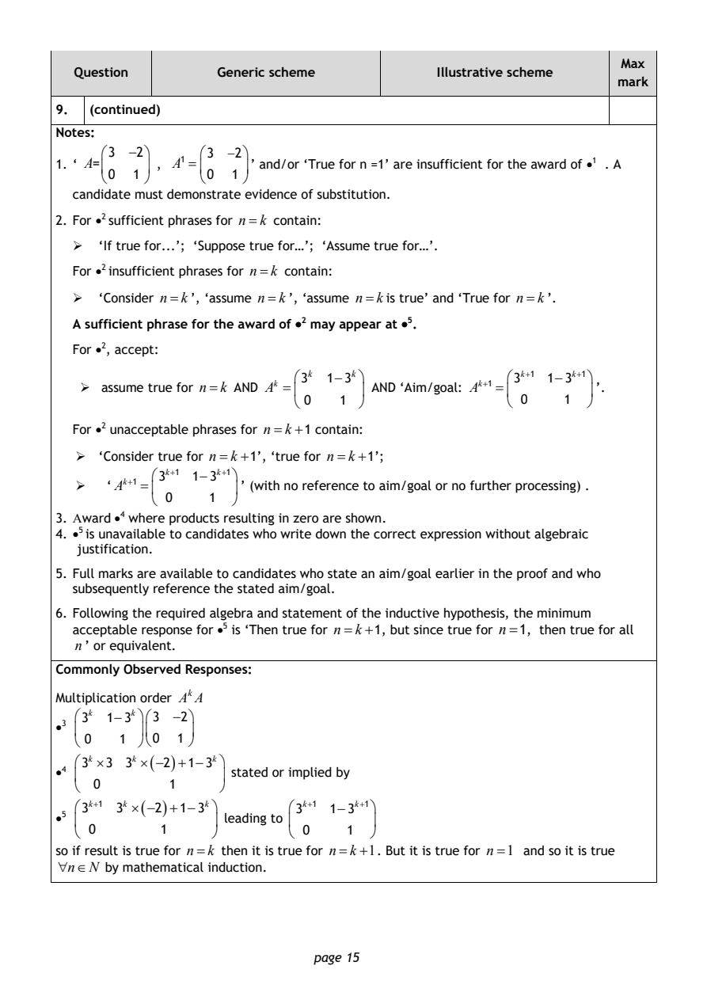
Selectable page text
Max
Question Generic scheme Illustrative scheme
mark
9. (continued)
Notes:
3 −2 3 −2
1. ‘ A= , A¹= ’ and/or ‘True for n =1’ are insufficient for the award of •¹ . A
0 1 0 1
candidate must demonstrate evidence of substitution.
2. For •² sufficient phrases for n=k contain:
➢ ‘If true for...’; ‘Suppose true for…’; ‘Assume true for…’.
For •² insufficient phrases for n=k contain:
➢ ‘Consider n=k’, ‘assume n=k’, ‘assume n=kis true’ and ‘True for n=k’.
A sufficient phrase for the award of •² may appear at •⁵.
For •², accept:
3^{k} 1−3^{k} 3^{k}⁺¹ 1−3^{k}⁺¹
➢ assume true for n=k AND A^{k} = AND ‘Aim/goal: A^{k}⁺¹= ’.
0 1 0 1
For •² unacceptable phrases for n=k+1 contain:
➢ ‘Consider true for n=k+1’, ‘true for n=k+1’;
3^{k}⁺¹ 1−3^{k}⁺¹
➢ ‘A^{k}⁺¹= ’ (with no reference to aim/goal or no further processing) .
0 1
3. Αward •⁴ where products resulting in zero are shown.
4. •⁵ is unavailable to candidates who write down the correct expression without algebraic
justification.
5. Full marks are available to candidates who state an aim/goal earlier in the proof and who
subsequently reference the stated aim/goal.
6. Following the required algebra and statement of the inductive hypothesis, the minimum
acceptable response for •⁵ is ‘Then true for n=k+1, but since true for n=1, then true for all
n’ or equivalent.
Commonly Observed Responses:
Multiplication order A^{k}A
3^{k} 1−3^{k}3 −2
•3
0 1 0 1
3^{k} ×3 3^{k} ×(−2)+1−3^{k}
•4 stated or implied by
0 1
3^{k}⁺¹ 3^{k} ×(−2)+1−3^{k} 3^{k}⁺¹ 1−3^{k}⁺¹
•5 leading to
0 1 0 1
so if result is true for n=k then it is true for n=k+1. But it is true for n=1 and so it is true
∀n∈N by mathematical induction.
page 15PDF page 16
Paper 2, Question 10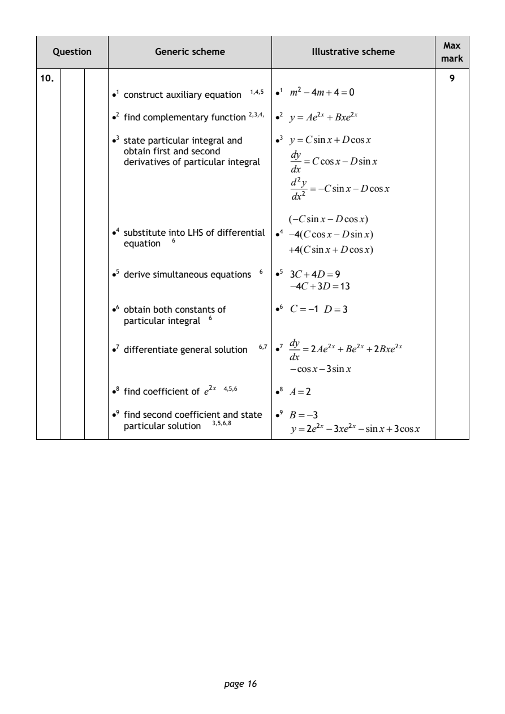
Selectable page text
Max
Question Generic scheme Illustrative scheme
mark
10. 9
•1 construct auxiliary equation ¹^{,}⁴,5 •1 m² −4m+4=0
•2 find complementary function ²^{,}³^{,}⁴, •2 y = Ae²^{x} +Bxe²^{x}
•3 state particular integral and •3 y =Csinx+Dcosx
obtain first and second
dy
derivatives of particular integral =Ccosx−Dsinx
dx
d²y
=−Csinx−Dcosx
dx²
(−Csinx−Dcosx)
•4 substitute in₆to LHS of differential •⁴ −4(Ccosx−Dsinx)
equation
+4(Csinx+Dcosx)
•5 derive simultaneous equations ⁶ •5 3C+4D=9
−4C+3D=13
•6 obtain both constants of •6 C =−1 D=3
particular integral ⁶
dy
•7 differentiate general solution ⁶^{,}7 •7 =2Ae²^{x} +Be²^{x} +2Bxe²^{x}
dx
−cosx−3sinx
•8 find coefficient of e²^{x} ⁴,5,6 •8 A=2
•9 find second coefficien₃_{,}t₅ _{,}₆a_{,}n₈d state •9 B=−3
particular solution y =2e²^{x} −3xe²^{x} −sinx+3cosx
page 16PDF page 17
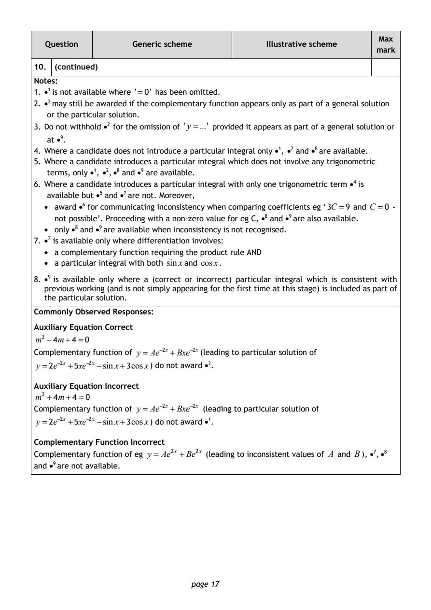
Selectable page text
Max
Question Generic scheme Illustrative scheme
mark
10. (continued)
Notes:
1. •¹ is not available where '=0' has been omitted.
2. •² may still be awarded if the complementary function appears only as part of a general solution
or the particular solution.
3. Do not withhold •² for the omission of 'y =...' provided it appears as part of a general solution or
at •⁹.
4. Where a candidate does not introduce a particular integral only •¹, •2 and •⁸ are available.
5. Where a candidate introduces a particular integral which does not involve any trigonometric
terms, only •¹, •2, •8 and •⁹ are available.
6. Where a candidate introduces a particular integral with only one trigonometric term •⁴ is
available but •⁵ and •⁷ are not. Moreover,
• award •⁶ for communicating inconsistency when comparing coefficients eg ‘3C =9 and C =0 -
not possible’. Proceeding with a non-zero value for eg C, •⁸ and •⁹ are also available.
• only •⁸ and •⁹ are available when inconsistency is not recognised.
7. •⁷ is available only where differentiation involves:
• a complementary function requiring the product rule AND
• a particular integral with both sinxand cosx.
8. •⁹ is available only where a (correct or incorrect) particular integral which is consistent with
previous working (and is not simply appearing for the first time at this stage) is included as part of
the particular solution.
Commonly Observed Responses:
Auxiliary Equation Correct
m² −4m+4 =0
Complementary function of y= Ae⁻²^{x} +Bxe⁻²^{x}(leading to particular solution of
y=2e⁻²^{x} +5xe⁻²^{x} −sinx+3cosx) do not award •².
Auxiliary Equation Incorrect
m² +4m+4 =0
Complementary function of y= Ae⁻²^{x} +Bxe⁻²^{x} (leading to particular solution of
y=2e⁻²^{x} +5xe⁻²^{x} −sinx+3cosx) do not award •¹.
Complementary Function Incorrect
Complementary function of eg y= Ae²^{x} +Be²^{x} (leading to inconsistent values of A and B), •⁷, •8
and •⁹ are not available.
page 17PDF page 18
Paper 2, Question 11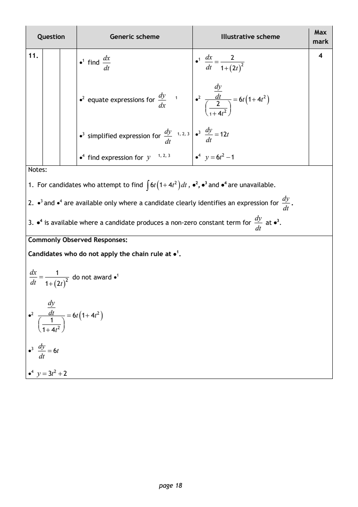
Selectable page text
Max
Question Generic scheme Illustrative scheme
mark
11. dx dx 2 4
•1 find •1 =
dt dt 1+(2t)²
dy
•2 equate expressions for dy ₁ •2 dt =6t ( 1+4t² )
dx 2
1
+4t²
dy ₁_{,}₂ dy
•3 simplified expression for , 3 •3 =12t
dt dt
•4 find expression for y ¹^{,} 2, 3 •4 y =6t² −1
Notes:
1. For candidates who attempt to find ∫6t ( 1+4t² ) dt, •², •3 and •⁴ are unavailable.
dy
2. •³ and •⁴ are available only where a candidate clearly identifies an expression for .
dt
dy
3. •⁴ is available where a candidate produces a non-zero constant term for at •³.
dt
Commonly Observed Responses:
Candidates who do not apply the chain rule at •¹.
dx 1
= do not award •¹
dt 1+(2t)²
dy
•2 dt =6t ( 1+4t² )
1
1+4t²
dy
•3 =6t
dt
•4 y =3t² +2
page 18PDF page 19
Paper 2, Question 12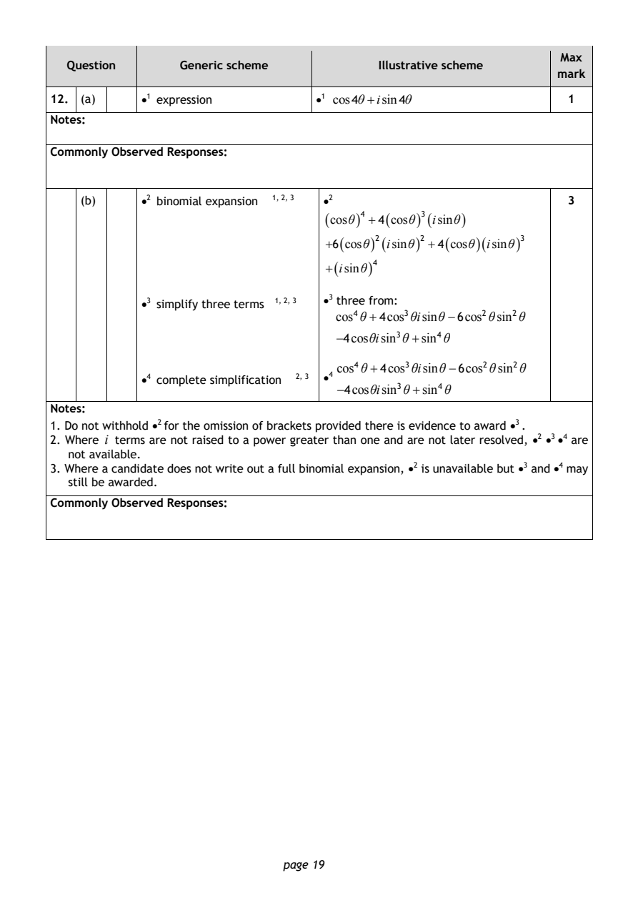
Selectable page text
Max
Question Generic scheme Illustrative scheme
mark
12. (a) •1 expression •1 cos4θ+isin4θ 1
Notes:
Commonly Observed Responses:
(b) •2 binomial expansion ¹^{,} 2, 3 •2 3
(cosθ)⁴ +4(cosθ)³(isinθ)
+6(cosθ)²(isinθ)² +4(cosθ)(isinθ)³
+(isinθ)⁴
•3 simplify three terms ¹^{,} 2, 3 •3 three from:
cos⁴θ+4cos³θisinθ −6cos²θsin²θ
−4cosθisin³θ+sin⁴θ
cos⁴θ+4cos³θisinθ −6cos²θsin²θ
•4 complete simplification ²^{,} 3 •4
−4cosθisin³θ+sin⁴θ
Notes:
1. Do not withhold •² for the omission of brackets provided there is evidence to award •³ .
2. Where i terms are not raised to a power greater than one and are not later resolved, •² •3 •4 are
not available.
3. Where a candidate does not write out a full binomial expansion, •² is unavailable but •³ and •⁴ may
still be awarded.
Commonly Observed Responses:
page 19PDF page 20
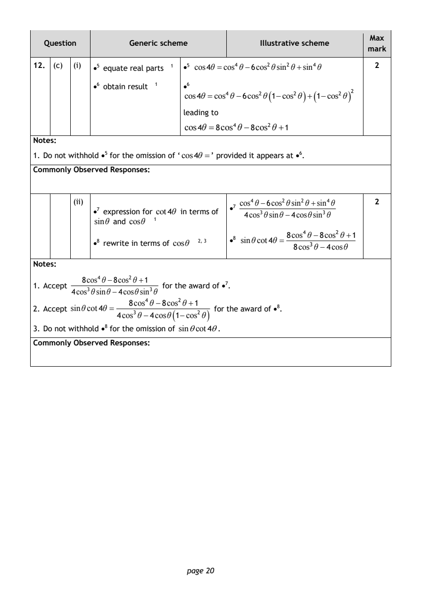
Selectable page text
Max
Question Generic scheme Illustrative scheme
mark
12. (c) (i) •5 equate real parts ¹ •5 cos4θ =cos⁴θ−6cos²θsin²θ+sin⁴θ 2
•6 obtain result ¹ •6
( ) ( )
cos4θ =cos⁴θ−6cos²θ 1−cos²θ + 1−cos²θ ²
leading to
cos4θ =8cos⁴θ−8cos²θ+1
Notes:
1. Do not withhold •⁵ for the omission of ‘cos4θ =’ provided it appears at •⁶.
Commonly Observed Responses:
(ii) cos⁴θ−6cos²θsin²θ+sin⁴θ 2
•7 expression for cot4θ in terms of
•7
4cos³θsinθ−4cosθsin³θ
sinθ and cosθ ¹
8cos⁴θ −8cos²θ +1
•8 rewrite in terms of cosθ ²^{,} 3
•8 sinθcot4θ =
8cos³θ −4cosθ
Notes:
8cos⁴θ−8cos²θ+1
1. Accept for the award of •⁷.
4cos³θsinθ−4cosθsin³θ
8cos⁴θ −8cos²θ +1
2. Accept sinθcot4θ = for the award of •⁸.
( )
4cos³θ −4cosθ 1−cos²θ
3. Do not withhold •⁸ for the omission of sinθcot4θ.
Commonly Observed Responses:
page 20PDF page 21
Paper 2, Question 13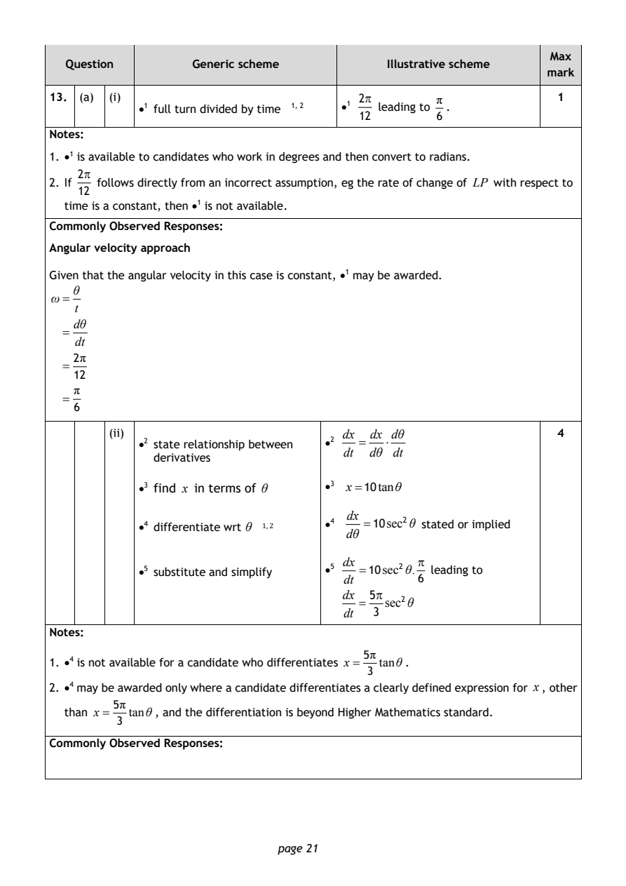
Selectable page text
Max
Question Generic scheme Illustrative scheme
mark
13. (a) (i) 2π π 1
•1 full turn divided by time ¹^{,} 2 •1 leading to .
12 6
Notes:
1. •¹ is available to candidates who work in degrees and then convert to radians.
2π
2. If follows directly from an incorrect assumption, eg the rate of change of LP with respect to
12
time is a constant, then •¹ is not available.
Commonly Observed Responses:
Angular velocity approach
Given that the angular velocity in this case is constant, •¹ may be awarded.
θ
ω=
t
dθ
=
dt
2π
=
12
π
=
6
(ii) dx dx dθ 4
•2 state relationship between •2 = ⋅
dt dθ dt
derivatives
•3 find x in terms of θ •3 x=10tanθ
dx
•4 differentiate wrt θ ¹^{,} ² •4 =10sec²θ stated or implied
dθ
dx π
•5 substitute and simplify •5 =10sec²θ. leading to
dt 6
dx 5π
= sec²θ
dt 3
Notes:
5π
1. •⁴ is not available for a candidate who differentiates x = tanθ.
3
2. •⁴ may be awarded only where a candidate differentiates a clearly defined expression for x, other
5π
than x = tanθ, and the differentiation is beyond Higher Mathematics standard.
3
Commonly Observed Responses:
page 21PDF page 22
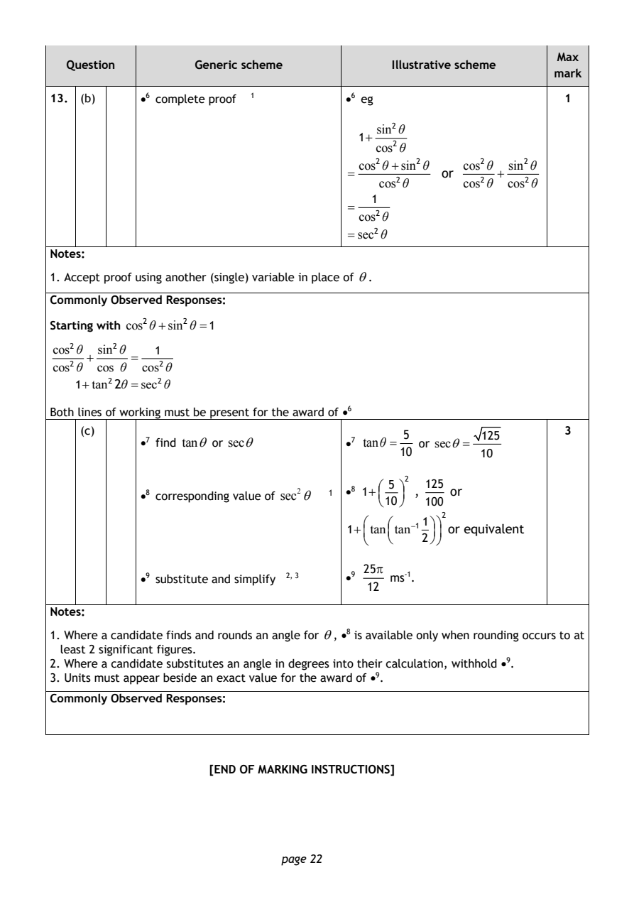
Selectable page text
Max
Question Generic scheme Illustrative scheme
mark
13. (b) •6 complete proof ¹ •6 eg 1
sin²θ
1+
cos²θ
cos²θ +sin²θ cos²θ sin²θ
= or +
cos²θ cos²θ cos²θ
1
=
cos²θ
=sec²θ
Notes:
1. Accept proof using another (single) variable in place of θ.
Commonly Observed Responses:
Starting with cos²θ+sin²θ =1
cos²θ sin²θ 1
+ =
cos²θ cos θ cos²θ
1+tan²2θ =sec²θ
Both lines of working must be present for the award of •⁶
(c) 3
5 125
•7 find tanθ or secθ •7 tanθ = or secθ=
10 10
5 ² 125
•8 corresponding value of sec²θ ¹ •8 1+ , or
10 100
1²
1+tantan⁻¹ or equivalent
2
25π
•9 substitute and simplify ²^{,} 3 •9 ms⁻¹.
12
Notes:
1. Where a candidate finds and rounds an angle for θ, •⁸ is available only when rounding occurs to at
least 2 significant figures.
2. Where a candidate substitutes an angle in degrees into their calculation, withhold •⁹.
3. Units must appear beside an exact value for the award of •⁹.
Commonly Observed Responses:
[END OF MARKING INSTRUCTIONS]
page 22